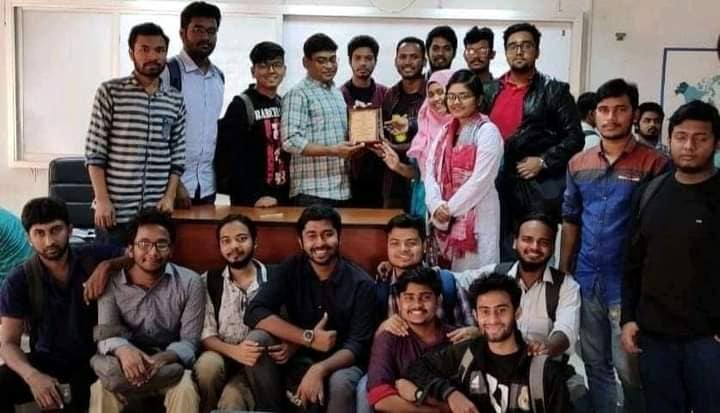

My educational journey began in 2001 at IQRA Academy, an ideal kindergarten school, where I was admitted into Nursery. From there, I completed KG-1, KG-2, Standard 1, Standard 2, and Class 3.
Later, I enrolled in Housing Estate Model Government Primary School in Class 4 and completed my primary education there in Class 5. I was honored to receive a Government Talent Scholarship at the end of my primary education, which became one of my earliest academic achievements.
Through a competitive admission process, I earned a place at Kushtia Zilla School in Class 6. I completed both my lower secondary and secondary education there.
In 2014, I appeared in the SSC examination from the Science group and achieved GPA 5.00, marking a significant milestone in my academic life.

After SSC, I enrolled at Kushtia City College in the Science group. I successfully completed my Higher Secondary 1st and 2nd year in 2014 and 2015.
In 2016, I appeared in the HSC examination from the Science group and completed my higher secondary education with distinction, securing the position of College First.
In 2016, through another highly competitive admission process, I secured Merit Position 88 and was admitted to the Department of International Relations at the University of Dhaka.
I completed my Bachelor’s degree in 2020 and my Master’s degree in 2021. Although the academic sessions were extended due to the COVID-19 pandemic, the formal completion process concluded between 2023 and 2024.
Studying International Relations enriched my understanding of global politics, diplomacy, culture, and world affairs — knowledge that continues to influence both my professional and personal vision.
Although my formal academic journey has been completed, my learning never stops. I continuously seek knowledge through reading, research, professional experiences, and engagement with modern ideas.
I strongly believe that education is not confined within classrooms — it is a lifelong process of growth, awareness, and self-improvement.